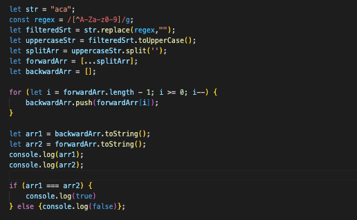

Mar 11, 2023
A palindrome is a word, phrase, number, or other sequence of characters that reads the same forward and backward. Examples of palindromes include "racecar", "level", "deified", and "madam". In this blog post, we will explore how to check for palindrome in Javascript using different approaches.
One simple approach to check for palindrome is to reverse the string and compare it to the original string. If the reversed string is the same as the original string, then the string is a palindrome. Here is an example of how to implement this approach:
function isPalindrome(str) {
var reversedStr = str.split('').reverse().join('');
return str === reversedStr;
}
This function takes a string as input, splits it into an array of characters, reverses the array, and joins the characters back into a string. It then compares the reversed string to the original string and returns true if they are the same.
Another approach to check for palindrome is to compare the characters from the beginning and end of the string. If the characters match, move on to the next pair of characters. If the characters do not match, the string is not a palindrome. Here is an example of how to implement this approach:
function isPalindrome(str) {
var len = str.length;
for (var i = 0; i < len / 2; i++) {
if (str[i] !== str[len - 1 - i]) {
return false;
}
}
return true;
}
This function takes a string as input and iterates through the characters from the beginning and end of the string. It compares each pair of characters and returns false if they do not match. If all pairs of characters match, the function returns true.
Checking for palindrome in Javascript is a common programming problem that can be solved using different approaches. By understanding how to reverse and compare strings and how to compare characters, you can implement efficient and effective palindrome checking functions. Remember to practice and experiment with different approaches to become proficient in solving programming problems. Good luck on your coding journey!